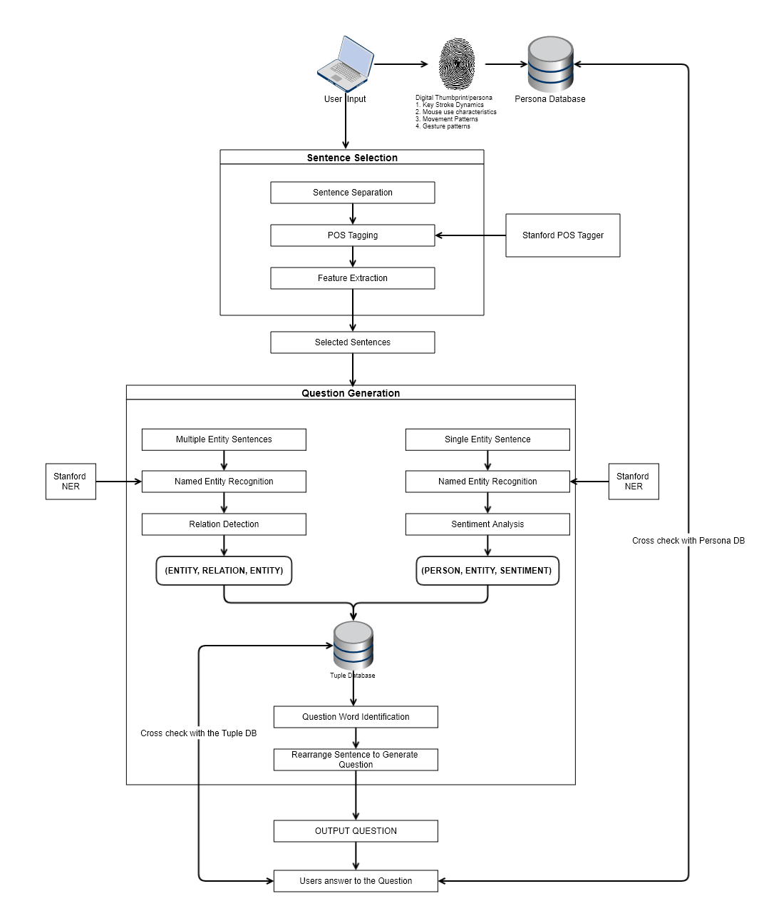

From Concept to Market: Business and Entrepreneurship Learnings at Unisys
Introduction
Under the guidance of Soma Kohli, Nandish Kopri, and Shivdeep Nancherla, my journey at Unisys was a transformative experience in business and entrepreneurship. This article reflects on the key business strategies, frameworks, and operational insights gained through working on cutting-edge cybersecurity projects like Malware Analysis, Sentiment-Based Authentication, and Enhanced Facial Recognition using Feature Modulation. It also highlights the entrepreneurial lessons learned in simplifying requirements and making impactful decisions with limited resources.
Unisys Stealth and Malware Analysis
The Malware Analysis project was an initiative to enhance Unisys Stealth®, a leading Zero Trust security platform. Stealth transforms traditional networks into secure micro-segmented environments called Communities of Interest (COIs). These COIs isolate sensitive assets, preventing lateral movement of attackers and significantly reducing the attack surface.
Malware Analysis added value to Stealth by incorporating advanced features like User Behavior Analytics (UBA), Network Monitoring, and Security Analytics. Initially conceptualized as part of a hackathon, the project aimed to detect malicious activity with greater precision and reduce operational complexities for existing Stealth clients. After winning the hackathon, the project underwent further refinement using business frameworks such as SWOT analysis and Porter’s Five Forces to ensure its market viability.
1. Market Analysis and Strategy
Applying strategic frameworks like SWOT and Porter’s Five Forces was critical to refining the project’s business case. Here’s how these frameworks were utilized:
- SWOT Analysis:
- Strengths: Stealth’s adaptability to existing infrastructure and strong data encryption capabilities.
- Weaknesses: Initial development costs and dependency on client trust for adoption.
- Opportunities: Growing demand for Zero Trust solutions and cloud security adoption.
- Threats: Competitors with established market presence and emerging regulations.
- Porter’s Five Forces:
- New Entrants: High barriers due to technological expertise and customer trust.
- Power of Suppliers: Partnerships with LogRhythm reduced reliance on third-party tools.
- Power of Buyers: Clients demanded seamless integration and lower operational overheads.
- Substitutes: Manual monitoring systems posed moderate risks, addressed through automation and analytics.
- Rivalry: Differentiation through Stealth’s micro-segmentation and Zero Trust approach positioned it effectively against competitors.
2. Customer and Stakeholder Insights
Understanding stakeholders’ needs was central to project success. For Malware Analysis, we had access to principal engineers inside and outside Unisys, including partners, to whom we presented our ideas. Feedback from these experts, combined with insights from the board of directors, enabled us to refine and validate the solution. This approach ensured the project aligned with both technical feasibility and market expectations.
3. Business Modeling and Operations
Strategic partnerships played a pivotal role in the success of the Malware Analysis project. LogRhythm's advanced SIEM capabilities provided unparalleled real-time threat detection and analytics, a level of expertise that would have been resource-intensive and time-consuming to replicate internally. This collaboration highlighted the value of partnerships in enhancing product offerings and accelerating time to market.
Explore the official announcement of the partnership here: Unisys Adds LogRhythm Security Intelligence Technology.
4. Sentiment-Based Authentication and Feature Modulation
The Sentiment-Based Authentication project was a creative endeavor to enhance user identification by utilizing behavioral and sentiment analysis. By analyzing user input patterns such as typing speed, sentiment polarity, and behavior during authentication processes, we replaced static passwords with dynamic, personalized questions.
This project used Natural Language Processing (NLP) techniques to create an MVP that demonstrated the feasibility of the concept. For example, by generating questions dynamically from user-entered data, we minimized the hardware requirements, focusing on software intelligence instead. This approach reduced upfront costs and enabled scalability across different deployment environments.
The Enhanced Facial Recognition project further explored the theme of resource optimization by implementing feature modulation techniques. By dynamically prioritizing distinguishing attributes, such as facial landmarks, the system demonstrated robust performance even in challenging environments like low lighting or partial occlusions.
This feature modulation was an earlier concept I extensively researched during my time at ASU. Although I did not initially label it as "robustness," the idea revolved around improving AI model resilience by deliberately introducing variations in facial features, such as adding goggles, mustaches, or hats, and evaluating the impact on model performance. This foundational work shaped my later thesis and influenced subsequent projects, emphasizing robustness and adaptability in AI systems.
5. Requirements Reduction and Scalability
Requirements reduction is both a strategy and a mindset that I honed through my experience as a software engineer and entrepreneur. Building on the insights gained at AWS, I recognized that the first iteration of any solution must focus on delivering functionality, however minimal, to address the core problem. The goal isn’t perfection but usability—ensuring the product is valuable from iteration one.
In the Sentiment-Based Authentication project, this approach led to prioritizing Natural Language Processing (NLP) techniques for generating dynamic questions. By focusing on software intelligence rather than adding costly hardware for biometric sensors, we created a Minimum Viable Product (MVP) that demonstrated feasibility while minimizing resource requirements. This made it easier to iterate and scale as we gathered feedback and improved the solution.
Similarly, the Enhanced Facial Recognition project reduced the computational overhead by employing feature modulation to prioritize key distinguishing attributes. This simplified the system design, enabling faster deployment and reducing the need for advanced hardware, all while maintaining performance in challenging scenarios.
Scalability stems from this foundation of simplification. A resource-efficient MVP ensures that as the solution evolves, it can handle increased complexity without overwhelming the infrastructure or budget. This iterative development approach, driven by user feedback and incremental improvements, is critical for entrepreneurial ventures where resources—particularly expertise—are often the costliest and most limited assets.
Conclusion
My experience at Unisys underscored the importance of strategic frameworks, stakeholder engagement, and iterative development in transforming ideas into impactful solutions. By leveraging partnerships, simplifying requirements, and focusing on scalable designs, we delivered innovations that addressed complex cybersecurity challenges effectively and efficiently. Projects like Malware Analysis and Sentiment-Based Authentication serve as prime examples of how technology and business strategy can work hand-in-hand to achieve success.